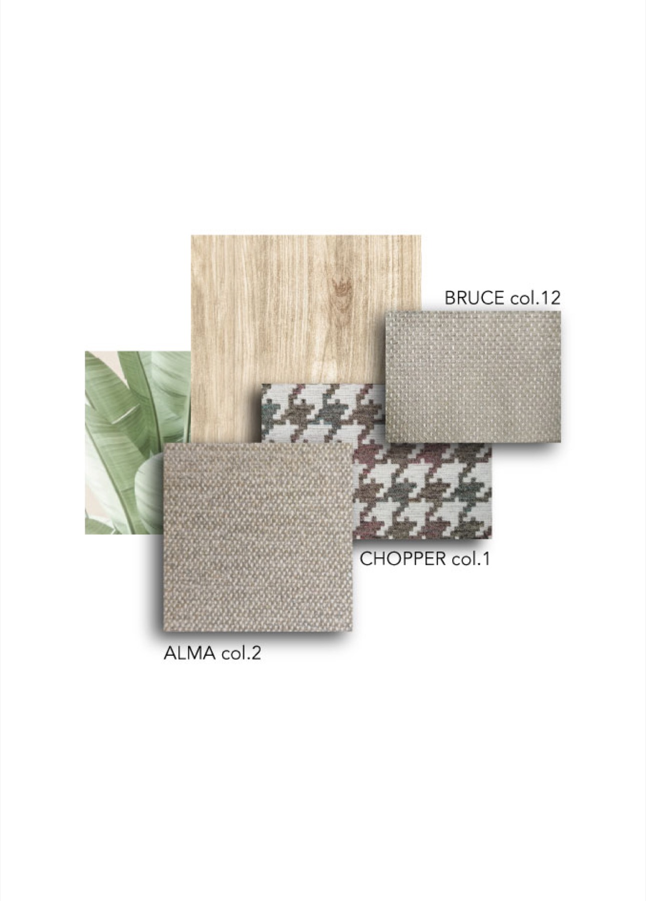

GRS
Global Recycle Standard
Certifica il contenuto riciclato dei tessuti GreenFabrics lungo tutta la filiera.
Il cuore della linea GreenFabrics è un filato di cotone rigenerato: tessuto in Italia, certificato GRS.
Vedi la collezioneCon GreenFabrics arrediamo con meno impatto sull'ambiente: cotone rigenerato, lavorato in Italia, senza rinunciare all'idrorepellenza.
Quello che si può misurare, dal filo al magazzino.
100%
Il filato della linea GreenFabrics è cotone rigenerato al 100%.
7
Alma, Isoppo, Bruce e Chopper, con i coordinati 1220, 1221 e 1266.
0,5 m
Si ordina anche mezzo metro: si compra solo il tessuto che serve, senza scorte che restano in magazzino.
35%
La parte del fabbisogno del magazzino di Noci coperta dai pannelli solari.




Dal filo al divano
Il cuore della linea GreenFabrics è un filato di cotone rigenerato.
Tessuto interamente in Italia, con un processo di lavorazione a basso impatto ambientale. E resta idrorepellente.
Alma, Isoppo, Bruce e Chopper, con i coordinati, in una vasta scelta di colori.
Per divani e poltrone: arredare con meno impatto sull'ambiente.
Le certificazioni dei nostri tessuti e del nostro modo di lavorare.
Tutte le certificazioniGRS
Certifica il contenuto riciclato dei tessuti GreenFabrics lungo tutta la filiera.
OEKO‑TEX®
Tessuti testati per l'assenza di sostanze nocive per la salute.
231
Un modello di organizzazione trasparente verso clienti, collaboratori e ambiente.
Alma, Isoppo, Bruce e Chopper, con i coordinati 1220, 1221 e 1266: cotone rigenerato, idrorepellente, in una vasta scelta di colori.
Cerca per composizione, colore o caratteristica.
Vedi la collezione